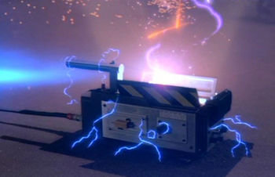

The proton pack, designed by Dr. Egon Spengler, is a man-portable particle accelerator system that is used to create a charged particle beam composed of protons that is fired by the proton gun (also referred to as the "neutrona wand"). Described as a "positron collider", it functions by colliding high-energy positrons to generate its proton beam. The beam allows a Ghostbuster to contain and hold "negatively charged ectoplasmic entities". This containment ability allows the wielder to position a ghost above a trap for capture.

The Trap is a sealed container that allows the Ghostbusters to transport the ghosts to the Containment Unit, where they will be released into the grid. When the trap is placed inside the grid, the captured ghost is put into the Containment Unit, the entity is pumped out of the trap cartridge so it can be used again.
Once a trap has captured a ghost and has closed, it cannot be re-opened without releasing the ghost contained within. For this reason, the Ghostbusters must each carry several traps. They must dispose of a trap once it is used.